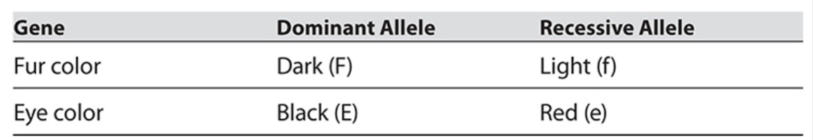
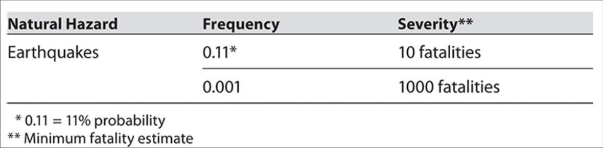
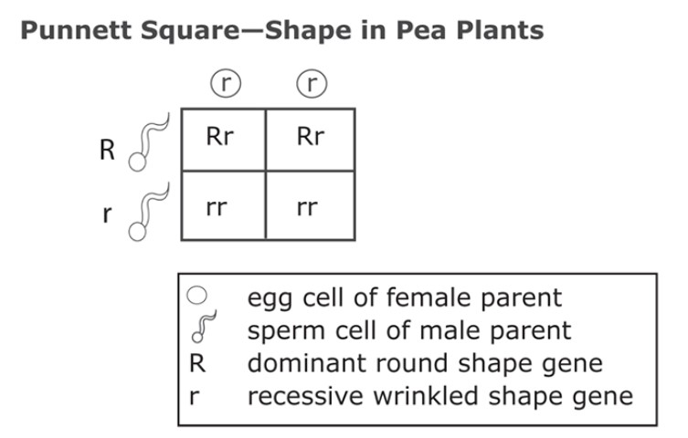

Question 1
A scientist designed an experiment in which he took a random sample of patients who tested positive for measles and found out whether, prior to their infection with the disease, they had received no measles vaccine, one dose of vaccine, or two doses of vaccine. He surveyed 100 patients who tested positive for measles and found that 7 people had received one dose of measles vaccine, 3 people had received two doses, and 90 people had not had the vaccine.
Question 2
Question 2 is based on the following table: Guinea Pig Inheritance
Question 3
Question (3) is based on the following table.
Question 4
Chromosomes come in pairs and contain genes, which code for inherited traits. If a gene is always expressed when present, it is called dominant and is represented by a capital letter. A dominant gene will be expressed whether an individual is pure and has two copies of the dominant gene or is hybrid and contains one dominant copy and one copy of another gene. In the case of hybrids, the dominant gene hides the expression of the recessive gene. A recessive gene is expressed only when it is pure, and it is represented by a lowercase letter. In pea plants, the gene for round pea shape is dominant and the gene for wrinkled pea shape is recessive. A plant that produces wrinkled peas must be pure for the wrinkled gene, meaning it must contain two copies of the wrinkled gene. A plant that produces round peas can either be pure for the round gene or be hybrid and have one gene for round shape and one gene for wrinkled shape. Punnett Squares are charts used to predict the odds of specific gene combinations in offspring. Below is a Punnett Square of a cross between a pea plant purebred for wrinkled peas and a pea plant that produces round peas.
Question 5
Common garden snails are hermaphroditic. That is, each individual snail produces both sperm and eggs. Mating between two garden snails involves the transfer of sperm from each partner to the other. A high school science teacher has created a large terrarium for his classroom that contains 6 adult garden snails.
1. What is the effectiveness of two doses of measles vaccine at preventing measles? Express your answer as a percent. Two doses of the measles vaccine are ____________% effective at preventing measles.
2. How many different combinations of alleles would produce a guinea pig with dark fur and red eyes?
3. The probability of an earthquake that results in loss of life for more than 1000 people in any given calendar year is
4. Which of the following describes the offspring of this cross?
5. Assuming that all 6 snails are healthy, how many different mating pairs are possible?